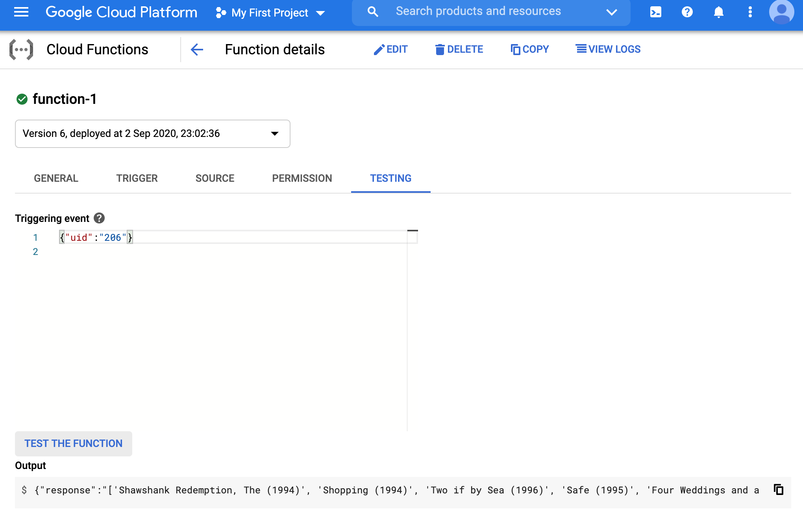

We modify the flask app that we had before, by again specifying the requirements.txt and the main python file appropriately. We will also increase the memory to 2GB and the timeout to 180 seconds. You will see that the following deployment has a lot of inefficiencies (can you spot the redundacy in loading the model and the predictions below?).
The requirements file will have the following entries:
numpy
flask
pandas
google-cloud-storage
scikit-surprise
pickle5
The main file is also modified accordingly. Note that if we reload the model and the metadata on every request, it will be extremely inefficient. To fix that we can use global variables. This is not a good choice in much of python programming, but quite useful here. Essentially, global variables allow us to cache some of the objects, for faster response times.
top_n = None
def recommend(request):
global top_n
from surprise import Dataset
import pandas as pd
import flask
from google.cloud import storage
import pickle5
def load(file_name):
dump_obj = pickle5.load(open(file_name, 'rb'))
return dump_obj['predictions'], dump_obj['algo']
def get_top_n(predictions, n=10):
def defaultdict(default_type):
class DefaultDict(dict):
def __getitem__(self, key):
if key not in self:
dict.__setitem__(self, key, default_type())
return dict.__getitem__(self, key)
return DefaultDict()
# First map the predictions to each user.
top_n = defaultdict(list)
for uid, iid, true_r, est, _ in predictions:
top_n[uid].append((iid, est))
# Then sort the predictions for each user and retrieve the k highest ones.
for uid, user_ratings in top_n.items():
user_ratings.sort(key=lambda x: x[1], reverse=True)
top_n[uid] = user_ratings[:n]
return top_n
data = {"success": False}
params = request.get_json()
if "uid" in params:
if not top_n:
bucket_name = "theja_model_store"
storage_client = storage.Client()
bucket = storage_client.get_bucket(bucket_name)
blob = bucket.blob("serverless/surprise_model/v1a")
blob.download_to_filename("/tmp/surprise_model") #ideally we should be reading things into memory
blob = bucket.blob("serverless/surprise_model/v1b")
blob.download_to_filename("/tmp/movies.dat")
df = pd.read_csv('/tmp/movies.dat',sep="::",header=None,engine='python')
df.columns = ['iid','name','genre']
df.set_index('iid',inplace=True)
predictions, algo = load('/tmp/surprise_model')
top_n = get_top_n(predictions, n=5)
data["response"] = str([df.loc[int(iid),'name'] for (iid, _) in top_n[params.get("uid")]])
data["success"] = True
# return a response in json format
return flask.jsonify(data)
We can test the function on the GCP console with a request JSON {"uid":"206"}.

As an exercise, think of ways to make the whole setup above lightweight in terms of model and data size.
Deploying the pytorch model after removing the dependecy on surprise is also a good challenge to tackle.
google-cloud-storage module based on time elapsed (say using datetime).